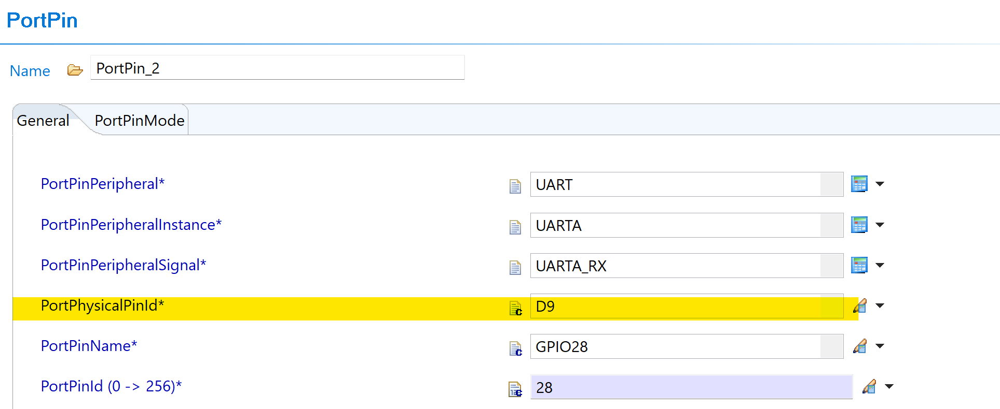
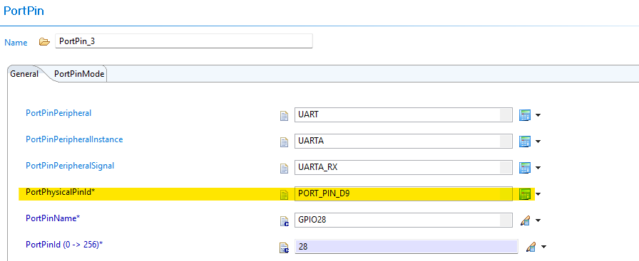
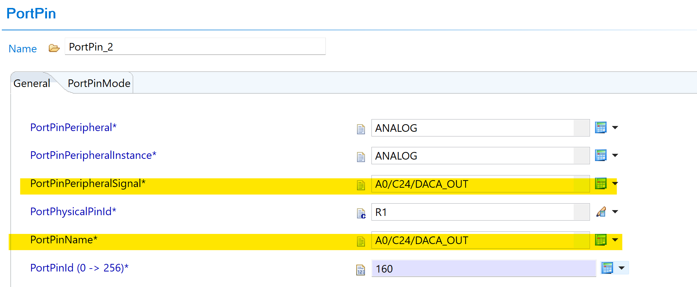
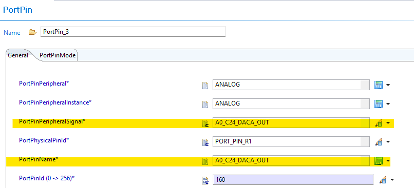
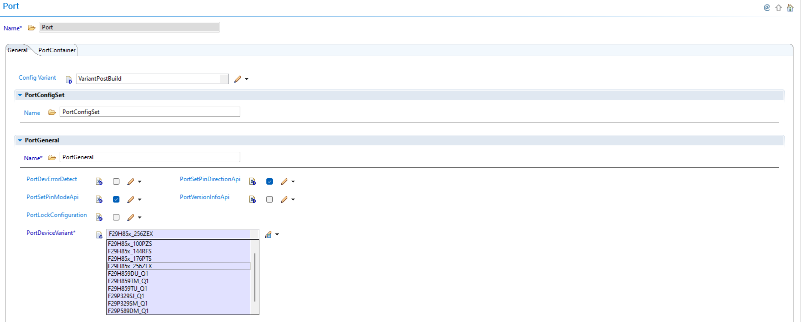
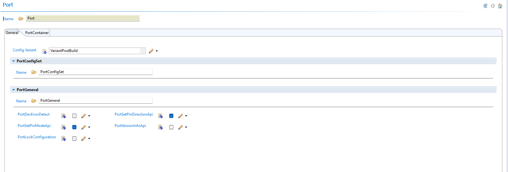

6.9. Port Module Migration
Migration Approach: Follow sequential migration for clear understanding of changes at each version. Each migration is organized by individual changes with description, old vs new comparison, and migration actions.
6.9.1. v04.00.00 (i.e release v26.00.00) from v03.00.00 (i.e release v01.04.01) Migration
6.9.1.1. Summary
This release contains plugin-only changes. The Port driver API is unchanged. The EB Tresos plugin configuration is updated for AUTOSAR compliance and improved device-variant support:
PortPhysicalPinId Enum Prefix Added: Physical pin number enum values now carry a
PORT_PIN_prefix to comply with AUTOSAR ENUMERATION naming rules.Peripheral Signal Name Slash Replacement:
/characters inMuxModeSignalTypeenum values replaced with_for AUTOSAR short name compliance.
6.9.1.2. Change 1: PortPhysicalPinId Enum Values — PORT_PIN_ Prefix Added
6.9.1.2.1. Description
AUTOSAR requires that all ENUMERATION literals begin with an alphabetic character. Previous releases used numeric-only values for PortPhysicalPinId (e.g., 1, 10, 100), which violates this rule. All PortPhysicalPinId enum entries now carry the PORT_PIN_ prefix.
This change affects the generated ARXML and any existing EB Tresos configuration that has a PortPhysicalPinId parameter set.
6.9.1.2.2. Old vs New PortPhysicalPinId Values
PortPhysicalPinId Value Mapping (examples):
v03.00.00 |
v04.00.00 |
|---|---|
|
|
|
|
|
|
|
|
Pattern: {N} → PORT_PIN_{N} for all physical pin number values.
6.9.1.2.3. Migration Actions
Open your Port configuration in EB Tresos.
Run Auto-calculate in EB Tresos to update the PortPhysicalPinId value.
Regenerate the configuration and verify that the generated code compiles without errors.
{kind=link}

Fig. 6.29 v03.00.00: PortPhysicalPinId dropdown showing numeric-only values
{kind=link}

Fig. 6.30 v04.00.00: PortPhysicalPinId dropdown showing PORT_PIN_ prefixed values
6.9.1.3. Change 2: MuxModeSignalType Peripheral Names — / Replaced with _
6.9.1.3.1. Description
Some peripheral signal type names in the PortPinPeripheralSignal / MuxModeSignalType enumeration previously contained / characters (e.g., A0/C24/DACA_OUT). The / character is not valid in AUTOSAR short names. All such entries now use _ instead of /.
This change affects any existing configuration that references a peripheral signal name containing a /.
6.9.1.3.2. Old vs New Signal Names
MuxModeSignalType Name Mapping (examples):
v03.00.00 |
v04.00.00 |
|---|---|
|
|
Pattern: All / characters in signal type names → _.
Note
Most GPIO and non-analog signal names are unaffected. Only entries where a single pin serves multiple analog functions (e.g., ADC channels that share a pin with DAC outputs) used the / separator. Review your PortPinPeripheralSignal selections if you configured any ANALOG or ADC-related peripheral signals.
6.9.1.3.3. Migration Actions
Open your Port configuration in EB Tresos.
Run Auto-calculate in EB Tresos to update the PortPhysicalPinId value.
Regenerate the configuration and run AUTOSAR validation to confirm no short-name errors remain.
{kind=link}

Fig. 6.31 v03.00.00: PortPinPeripheralSignal showing slash-separated signal name (e.g. A0/C24/DACA_OUT)
{kind=link}

Fig. 6.32 v04.00.00: PortPinPeripheralSignal showing underscore-replaced signal name (e.g. A0_C24_DACA_OUT)
The code snippet given below can be used to migrate the PORT module changes from v03.00.00 to v04.00.00.
"""
Script to find all Port.xdm files recursively in a given directory and apply
the following transformations:
1. PortPhysicalPinId: Prefix values with PORT_PIN_ if not already prefixed.
Example: value="G2" -> value="PORT_PIN_G2"
2. PortPinPeripheralSignal: Replace '/' and ',' with '_' in values.
Example: value="A0/C24/DACA_OUT" -> value="A0_C24_DACA_OUT"
3. PortPinName: Replace '/' and ',' with '_' in values.
Example: value="A6/E24,GPIO224" -> value="A6_E24_GPIO224"
Usage: python fix_port_pin_id.py <folder_path>
Example: python fix_port_pin_id.py .
Example: python fix_port_pin_id.py examples/Port
"""
import os
import re
import sys
if len(sys.argv) < 2:
print("Usage: python fix_port_pin_id.py <folder_path>")
print(" Example: python fix_port_pin_id.py .")
print(" Example: python fix_port_pin_id.py examples/Port")
sys.exit(1)
search_path = sys.argv[1]
if not os.path.isdir(search_path):
print(f"Error: '{search_path}' is not a valid directory.")
sys.exit(1)
# Pattern 1: PortPhysicalPinId - prefix with PORT_PIN_
pattern_physical_pin = re.compile(
r'(name="PortPhysicalPinId"\s+type="ENUMERATION"\s+value=")'
r'((?!PORT_PIN_)([^"]+))'
r'(")'
)
replacement_physical_pin = r'\1PORT_PIN_\3\4'
def replace_slash_comma(match):
"""Replace '/' and ',' with '_' in the matched value."""
prefix = match.group(1)
value = match.group(2)
suffix = match.group(3)
new_value = value.replace("/", "_").replace(",", "_")
return prefix + new_value + suffix
# Pattern 2: PortPinPeripheralSignal - replace / and , with _
pattern_peripheral_signal = re.compile(
r'(name="PortPinPeripheralSignal"\s+type="ENUMERATION"\s+value=")'
r'([^"]*[/,][^"]*)'
r'(")'
)
# Pattern 3: PortPinName - replace / and , with _
pattern_pin_name = re.compile(
r'(name="PortPinName"\s+type="ENUMERATION"\s+value=")'
r'([^"]*[/,][^"]*)'
r'(")'
)
files_updated = 0
files_skipped = 0
for dirpath, dirnames, filenames in os.walk(search_path):
for filename in filenames:
if filename == "Port.xdm":
filepath = os.path.join(dirpath, filename)
with open(filepath, "r", encoding="utf-8") as f:
content = f.read()
new_content = content
# Apply Pattern 1: PortPhysicalPinId
new_content = pattern_physical_pin.sub(
replacement_physical_pin, new_content
)
# Apply Pattern 2: PortPinPeripheralSignal
new_content = pattern_peripheral_signal.sub(
replace_slash_comma, new_content
)
# Apply Pattern 3: PortPinName
new_content = pattern_pin_name.sub(replace_slash_comma, new_content)
if new_content != content:
with open(filepath, "w", encoding="utf-8") as f:
f.write(new_content)
print(f"Updated: {filepath}")
files_updated += 1
else:
print(f"No changes: {filepath}")
files_skipped += 1
print(f"\nDone. Updated: {files_updated}, No changes: {files_skipped}")
6.9.2. v03.00.00 (i.e release v01.04.00) from v02.00.00 (i.e release v01.03.00) Migration
6.9.2.1. Summary
Version v03.00.00 introduces Resource Allocator as a mandatory architectural foundation. This represents a fundamental shift from direct parameter configuration to centralized resource management with device-specific pin configurations:
Resource Allocator Introduction and Device Variant Centralization: Resource Allocator becomes mandatory with device variant selection moved from Port module to centralized Resource Allocator
PREREQUISITE: Complete Resource Allocator Setup before proceeding.
6.9.2.2. Change 1: Resource Allocator Introduction and Device Variant Centralization
6.9.2.2.1. Description
Resource Allocator becomes a mandatory architectural foundation for the Port module, with device variant selection moved to centralized resource management. Resource Allocator determines available pins and mux options, while device-specific pin configurations, mux modes, and package information are now derived from Resource Allocator settings.
6.9.2.2.2. Old vs New Configuration
Old (v02.00.00): Direct device variant selection was used within Port module configuration.
{kind=link}

Fig. 6.33 v02.00.00: PortDeviceVariant configured within Port module
New (v03.00.00): Port module automatically reads device variant information from Resource Allocator to determine available pins and mux options.
{kind=link}

Fig. 6.34 v03.00.00: Port module configuration without PortDeviceVariant - device settings now derived from Resource Allocator
Parameter Source Changes:
Parameter |
v02.00.00 |
v03.00.00 |
|---|---|---|
Device Variant |
Configured in Port module |
Derived from Resource Allocator |
Pin Availability |
Based on Port module device settings |
Automatically filtered by Resource Allocator |
Mux Modes |
Configured in Port module |
Centralized in Resource Allocator |
Package Information |
Direct configuration in Port |
Derived from Resource Allocator |
6.9.2.2.3. Migration Actions
Setup Resource Allocator: Follow Resource Allocator Setup with Device, Variant, and Package parameters
Navigate to Port Configuration: Navigate to Port → PortContainer → PortPin
Verify Pin Configurations: Ensure all pin-related parameters reference the correct Resource Allocator data and available pin options are automatically filtered based on Resource Allocator device settings
Note
The Resource Allocator module must be configured before the Port module to ensure correct pin availability filtering. Device-specific pin configurations, mux modes, and package information are now derived from the Resource Allocator settings.
6.9.3. v02.00.00 (i.e release v01.03.00) from v01.01.00 (i.e release v01.02.00) Migration
6.9.3.1. Summary
Version v02.00.00 introduces major changes that require attention when migrating from v01.01.00 or any older versions:
Port Pin Name Changes: PortPinName and PortPinPeripheralSignal naming conventions updated, affecting configuration compatibility
Configuration Structure Name Change: Port configuration structure name updated for AUTOSAR TPS_ECUC_08011 compliance
6.9.3.2. Change 1: Port Pin Name Changes
6.9.3.2.1. Description
Version v02.00.00 updates PortPinName and PortPinPeripheralSignal naming conventions, impacting configuration parameters. Port configurations from v01.01.00 or older versions are not directly compatible with v02.00.00 due to these naming changes.
6.9.3.2.2. Old vs New Pin Naming
Pin Naming Convention Changes:
Aspect |
v01.01.00 and older |
v02.00.00 |
|---|---|---|
PortPinName and PortPinPeripheralSignal |
Old naming convention |
Updated naming convention |
Configuration Compatibility |
Direct compatibility |
Not compatible - requires reconfiguration |
Plugin Handling |
N/A |
Automatically flags incompatible configurations |
6.9.3.2.3. Migration Actions
Open Configuration: Open your existing configuration in the latest plugin version
Identify Incompatible Configurations: The plugin will automatically flag incompatible pin configurations
Reconfigure Pins: Configure pins using the new naming convention by choosing values from the plugin
Verify All Configurations: Verify and update all affected pin configurations
6.9.3.3. Change 2: Configuration Structure Name Change
6.9.3.3.1. Description
Version v02.00.00 changes the configuration structure name for AUTOSAR TPS_ECUC_08011 compliance, requiring updates to application code that references the Port configuration structure.
6.9.3.3.2. Old vs New Configuration Structure
Configuration Structure Name Mapping:
v01.01.00 and older |
v02.00.00 |
|---|---|
|
|
Code Examples:
// v01.01.00 and older
Port_Init(&Port_PortConfigSet);
// v02.00.00
Port_Init(&Port_Config);
6.9.3.3.3. Migration Actions
Search Application Code: Find all references to
Port_PortConfigSetin your application codeReplace Structure Name: Update all references from
Port_PortConfigSettoPort_ConfigUpdate Function Calls: Ensure all Port initialization calls use the new structure name
Update Upper Modules: Update any upper modules that reference the configuration structures to use the new structure name
Verify Compilation: Clean build and verify no compilation errors related to Port configuration structure